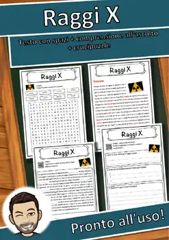
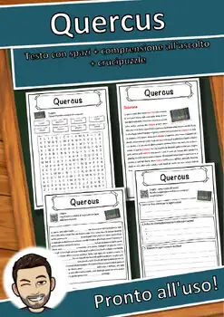
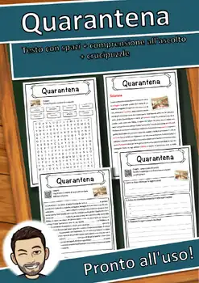
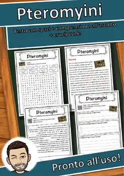

Reading Comprehension Worksheets
Informational text as a cloze passage with word bank, a QR-code listening task with free audio, and a word search – 5 pages with answer keys.
4,294 resources
Subject
Grade
By grade: 5th Grade · 9th Grade

Riese – Italian Reading Comprehension Worksheet (Scheda): Cloze & Listening

Reykjavík – Italian Reading Comprehension Worksheet (Scheda): Cloze & Listening

Reptilia – Italian Reading Comprehension Worksheet (Scheda): Cloze & Listening

Reno – Italian Reading Comprehension Worksheet (Scheda): Cloze & Listening

Renio – Italian Reading Comprehension Worksheet (Scheda): Cloze & Listening

Rene – Italian Reading Comprehension Worksheet (Scheda): Cloze & Listening

Rembrandt – Italian Reading Comprehension Worksheet (Scheda): Cloze & Listening

Reliquia – Italian Reading Comprehension Worksheet (Scheda): Cloze & Listening

Religion – Italian Reading Comprehension Worksheet (Scheda): Cloze & Listening
Realismo – Italian Reading Comprehension Worksheet (Scheda): Cloze & Listening

Re Artù – Italian Reading Comprehension Worksheet (Scheda): Cloze & Listening

Re – Italian Reading Comprehension Worksheet (Scheda): Cloze & Listening
Razzo – Italian Reading Comprehension Worksheet (Scheda): Cloze & Listening

Razzismo – Italian Reading Comprehension Worksheet (Scheda): Cloze & Listening
Rattus – Italian Reading Comprehension Worksheet (Scheda): Cloze & Listening

Rasatura – Italian Reading Comprehension Worksheet (Scheda): Cloze & Listening

Rapina – Italian Reading Comprehension Worksheet (Scheda): Cloze & Listening

Rame – Italian Reading Comprehension Worksheet (Scheda): Cloze & Listening

Raggi X – Italian Reading Comprehension Worksheet (Scheda): Cloze & Listening

Ragazzo – Italian Reading Comprehension Worksheet (Scheda): Cloze & Listening

Ragazza – Italian Reading Comprehension Worksheet (Scheda): Cloze & Listening

Radar – Italian Reading Comprehension Worksheet (Scheda): Cloze & Listening

Raclette – Italian Reading Comprehension Worksheet (Scheda): Cloze & Listening

Raccolta – Italian Reading Comprehension Worksheet (Scheda): Cloze & Listening

Quercus – Italian Reading Comprehension Worksheet (Scheda): Cloze & Listening

Quarzo – Italian Reading Comprehension Worksheet (Scheda): Cloze & Listening
Quartet – Italian Reading Comprehension Worksheet (Scheda): Cloze & Listening

Quarantena – Italian Reading Comprehension Worksheet (Scheda): Cloze & Listening

Qatar – Italian Reading Comprehension Worksheet (Scheda): Cloze & Listening
Pyrus – Italian Reading Comprehension Worksheet (Scheda): Cloze & Listening

Puzzle – Italian Reading Comprehension Worksheet (Scheda): Cloze & Listening

Pupilla – Italian Reading Comprehension Worksheet (Scheda): Cloze & Listening

Punk – Italian Reading Comprehension Worksheet (Scheda): Cloze & Listening

Pugilato – Italian Reading Comprehension Worksheet (Scheda): Cloze & Listening

Pubertà – Italian Reading Comprehension Worksheet (Scheda): Cloze & Listening

Pteromyini – Italian Reading Comprehension Worksheet (Scheda): Cloze & Listening

Prussia – Italian Reading Comprehension Worksheet (Scheda): Cloze & Listening

Provincia – Italian Reading Comprehension Worksheet (Scheda): Cloze & Listening

Proverbio – Italian Reading Comprehension Worksheet (Scheda): Cloze & Listening

Provenza – Italian Reading Comprehension Worksheet (Scheda): Cloze & Listening

Propaganda – Italian Reading Comprehension Worksheet (Scheda): Cloze & Listening

Promezio – Italian Reading Comprehension Worksheet (Scheda): Cloze & Listening

Professore – Italian Reading Comprehension Worksheet (Scheda): Cloze & Listening

Porto – Italian Reading Comprehension Worksheet (Scheda): Cloze & Listening

Principe – Italian Reading Comprehension Worksheet (Scheda): Cloze & Listening

Primavera – Italian Reading Comprehension Worksheet (Scheda): Cloze & Listening

Primato – Italian Reading Comprehension Worksheet (Scheda): Cloze & Listening

Prigione – Italian Reading Comprehension Worksheet (Scheda): Cloze & Listening
No resources found – try a different search term or filter.